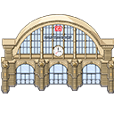

In diesem Joblabyrinth findest du Infos zu einigen ausgewählten Jobs, die es bei der Bahn gibt. Du kannst dich mit deinem Woka selbstständig durch das Labyrinth bewegen
oder ihn über die Buttons am unteren Bildschirmrand steuern.
Jede Plattform hält Informationen zu einem unserer vielseitigen Berufe bereit. Wenn du dich auf einer Plattform befindest kannst du dich mit anderen Besuchern unterhalten, auf den Wegen im Labyrinth geht das nicht.
Auf jeder Plattform findest du einen Ausgang zur Bahnhofsmap, sie sind mit einem kleinen Exit-Schild markiert. Wenn du das Labyrinth verlässt und wieder zurückkommen möchtest, musst du es von vorn beginnen.
Es kann vorkommen, dass sich dein Woka bei der Steuerung über die Buttons "verennt" und nicht richtig weiterkommt. In dem Fall kannst du den Button einfach nochmal klicken, bis dein Woka wieder den richtigen Weg findet.
| Das Labyrinth wird neu geladen und dein Woka landet wieder auf der Startplattform | |
| Dein Woka läuft zurück zur zuletzt besuchten Plattform | |
| Dein Woka läuft zur nächstmöglichen Plattform | |
|  | Dein Woka verlässt das Labyrinth und landet wieder auf der Hauptmap (Dein Fortschritt wird nicht gespeichert) |
Wenn du die Shift-Taste gedrückt hältst, bewegt dein Woka sich etwas schneller.